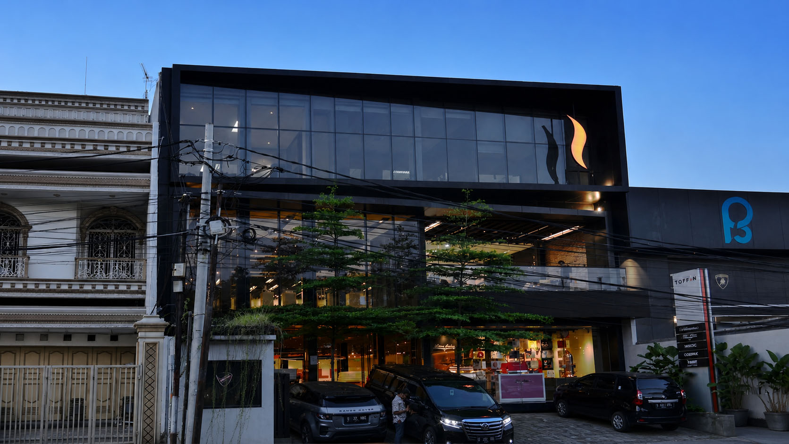
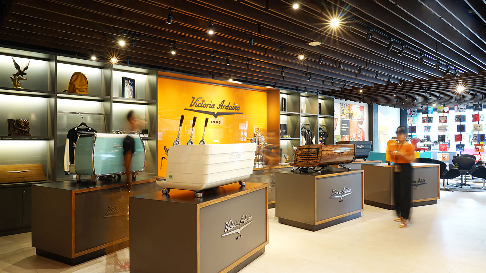

Perjalanan kami dari satu kota menjadi 19 kota, dari instalasi pertama hingga ribuan mesin yang beroperasi setiap hari, adalah cerminan komitmen kami untuk membangun kepercayaan secara konsisten — satu kemitraan dalam satu waktu.


PT Toffin Indonesia didirikan pada tahun 2007 dengan satu prinsip dasar: setiap pelaku bisnis F&B di Indonesia berhak mendapatkan akses terhadap mesin kopi berkualitas internasional, didukung oleh ekosistem layanan yang andal dan profesional.
Hampir dua dekade kemudian, peran kami telah berkembang melampaui fungsi distribusi konvensional. Toffin kini berdiri sebagai ekosistem layanan HORECA paling lengkap di Indonesia — menghubungkan ribuan kafe dan restoran dengan teknologi mesin terkini, bahan baku berkualitas premium, platform digital terintegrasi, dan tenaga ahli berpengalaman.
Pengakuan sebagai distributor lima besar global untuk beberapa brand mesin kopi premium dunia bukan merupakan tujuan utama kami — melainkan hasil alami dari konsistensi dalam menjalankan komitmen yang kami pegang sejak awal: menjadi mitra yang memberikan nilai nyata bagi setiap bisnis yang kami layani.
Setiap produk yang kami distribusikan melewati kurasi ketat. Kami hanya merekomendasikan yang terbaik untuk bisnis Anda.
Kami memposisikan diri sebagai mitra bisnis, bukan sekadar pemasok. Setiap hubungan kami dibangun atas dasar kepercayaan jangka panjang dan hasil yang dapat dipertanggungjawabkan, bukan transaksi tunggal.
Mulai dari menghadirkan teknologi espresso terkini hingga mengembangkan Toffin App, kami berkomitmen pada inovasi yang berdampak langsung pada keunggulan kompetitif mitra bisnis kami.
Lebih dari 100 tenaga ahli kami — meliputi teknisi bersertifikat, pelatih barista profesional, dan Toffin Flavour Engineer — membawa pengalaman yang diasah selama hampir dua dekade langsung ke operasional bisnis Anda.
Kami memahami bahwa operasional bisnis berjalan tanpa henti. Tim layanan purna jual kami siap merespons di seluruh kota layanan untuk memastikan kontinuitas operasional Anda terjaga optimal.
Keberhasilan mitra bisnis adalah indikator utama keberhasilan kami. Setiap rekomendasi yang kami sampaikan dirancang untuk mendukung pertumbuhan jangka panjang bisnis Anda, bukan untuk kepentingan jangka pendek kami.
Toffin App meraih penghargaan Product of the Year 2024
Masuk daftar distributor terbaik dunia untuk beberapa brand mesin kopi premium
Partner resmi Victoria Arduino, Nuova Simonelli, SMEG, dan brand global lainnya
15.000+ klien aktif yang terus mempercayakan kebutuhan bisnis mereka kepada Toffin
Dari Medan hingga Makassar, dari Jakarta hingga Nusa Tenggara Barat — jaringan layanan kami menjangkau kebutuhan bisnis HORECA di seluruh wilayah Indonesia.
Cari Lokasi Cabang Terdekat →Toffin Indonesia adalah distributor dan mitra strategis bisnis F&B/HORECA yang berdiri sejak 2007. Toffin menyediakan solusi terintegrasi, mulai dari mesin kopi premium, bahan baku, hingga layanan purna jual, dengan jaringan layanan dan showroom di 19 kota di Indonesia. Toffin juga diakui sebagai distributor top-5 global untuk beberapa brand premium dunia.
Toffin Indonesia berdiri sejak 2007 dan telah memimpin industri HORECA Indonesia selama lebih dari 17 tahun. Dalam rentang waktu tersebut, Toffin berkembang dari penyedia mesin kopi menjadi mitra bisnis jangka panjang bagi industri F&B di seluruh Indonesia.
Toffin menyediakan ekosistem lengkap untuk bisnis F&B, bukan hanya mesin kopi, tetapi juga mesin espresso dan grinder premium, lebih dari 340 SKU bahan baku seperti biji kopi specialty, sirup, dan bahan minuman, layanan purna jual oleh teknisi bersertifikat, pelatihan barista dan konsultasi bisnis, serta Toffin App sebagai platform digital B2B untuk operasional kafe.
Pelanggan Toffin mencakup lebih dari 15.000 bisnis HORECA di Indonesia, termasuk kafe, restoran, dan hotel, dari bisnis independen hingga jaringan multi-outlet. Toffin melayani seluruh siklus kebutuhan mereka, mulai dari pemilihan mesin, pasokan bahan baku rutin, hingga pelatihan dan dukungan teknis.
Toffin memiliki jaringan layanan dan showroom di 19 kota di Indonesia, yaitu Jakarta, Bogor, Bandung, Cirebon, Semarang, Jogjakarta, Surabaya, Malang, Bali, Lombok, Medan, Pekanbaru, Batam, Palembang, Lampung, Pontianak, Banjarmasin, Samarinda, dan Makassar. Melalui jaringan ini beserta tim teknisi dan layanan pengiriman, Toffin mampu melayani pelanggan HORECA di seluruh wilayah Indonesia, baik di kota cabang maupun di luar kota cabang.
Toffin memiliki tim purna jual sendiri yang terdiri dari lebih dari 100 teknisi bersertifikat yang tersebar di 19 kota. Tim ini menangani instalasi, kalibrasi, servis preventif, dan penggantian suku cadang.
Toffin menyediakan program pelatihan dan konsultasi, mulai dari barista training dasar, pengembangan menu minuman bersama tim Flavour Engineer, hingga konsultasi bisnis untuk pemilihan mesin dan strategi operasional kafe. Layanan ini dirancang untuk membantu pelaku usaha F&B meningkatkan kualitas dan konsistensi produk mereka.
Toffin merupakan distributor resmi puluhan brand internasional, termasuk Victoria Arduino, Nuova Simonelli, Eversys, Rocket Espresso, SMEG, Eureka, Compak, VBM, Officine Allegra, Moccamaster Technivorm, Vitamix, Hario, Fabbri, Davinci Gourmet, FO, dan Comprital. Setiap produk dilengkapi garansi resmi principal dan dukungan suku cadang original di Indonesia.
Ya. Toffin dapat mendampingi proses pembukaan coffee shop baru dari awal, mulai dari konsultasi konsep dan pemilihan mesin sesuai kapasitas, penyusunan menu dan pasokan bahan baku, pelatihan barista, hingga dukungan teknis purna jual. Pendekatan Toffin disesuaikan dengan kebutuhan spesifik setiap bisnis.
Keunggulan Toffin terletak pada solusi terintegrasi dan jaringan purna jual yang luas. Toffin merupakan distributor top-5 global untuk beberapa brand premium dunia, didukung lebih dari 100 teknisi bersertifikat di 19 kota, ketersediaan suku cadang original, lebih dari 340 SKU bahan baku, serta Toffin App pemenang Product of the Year 2024.
Anda dapat menghubungi Toffin melalui WhatsApp di +62 811-9983-378 atau email info@toffin.id. Kantor pusat Toffin berlokasi di Jl. Pluit Permai No.4, Pluit, Penjaringan, Jakarta Utara 14450. Daftar cabang lengkap tersedia di halaman Kontak.
Mulai perjalanan bisnis kafe Anda bersama Toffin hari ini.